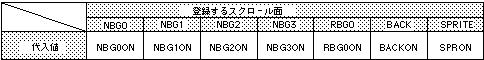

Return to previous page | Return to menu | Go to next page
void
Scroll function
Color offset selection
void slColOffsetBUse(flag)
Uint16 flag ;
flag screen
Sets the scroll plane affected by the color offset value set by the function “slColOffsetB”. In addition, multiple parameters can be concatenated by connecting multiple parameters using the or operator “|”.
None
parameter according to the scroll plane to be registered.

Note) The values in the above table are defined in “sl_def.h” included with the system.
Reference: Chapter 8 Scroll
slColOffsetBUse